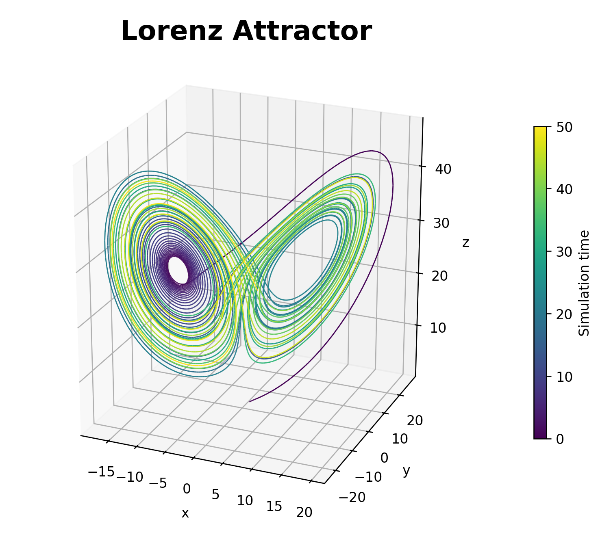

导航与状态估计
智能状态估计-基于 GRU 的自适应卡尔曼滤波
结合状态空间先验与三路 GRU 增益估计，完成含噪时序信号的递推滤波。
3,000 步非线性轨迹测试
技术实践
- 基于 PyTorch 实现神经网络辅助的递推滤波器，结合状态空间模型的先验预测与观测新息校正，实现含噪时序信号的在线状态估计。
- 实现 三路 GRU 增益估计模块，融合观测差分、观测新息与状态更新残差，逐时刻估计卡尔曼增益并更新后验状态。
- 搭建从仿真数据生成、批量训练到测试评估的完整流程，覆盖匀加速运动与 Lorenz 混沌系统，模拟仅位置观测、降采样和模型失配场景。
- 以 KF / EKF 为基线，使用 MSE（dB） 和轨迹重建结果评估滤波表现，测试覆盖单条 3,000 步的非线性轨迹。
项目图片
